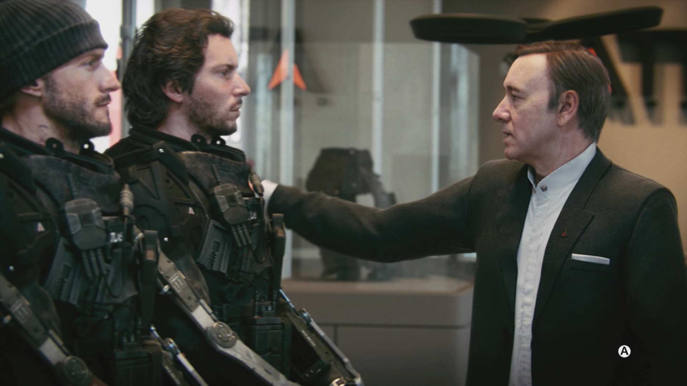

Returning Home
Upon returning home to the United States, Mitchell is discharged from the Marines due to his injury and later attends Will's Funeral, where Cormack delivers an eulogy for his fellow Marine's bravery. After paying their respects to their fallen comrade, Cormack ensures Mitchell that he will support Mitchell through this ordeal, until they are interrupted by Jonathan Irons. While Cormack offers his sympathies to the grieving Irons, the latter offers Mitchell a place in Atlas, claiming that Will told him of the great soldier he was, and that he deserves to fight for an army as effective as he is. Mitchell accepts and is given a "second chance" in the form of a high-tech prosthetic arm. Mitchell then goes through training at Camp David, an Atlas Facility in Virginia, to adjust to his new arm. During a simulation in which they must extract the U.S. President from a terrorist occupied house, Mitchell and fellow Atlas soldier Joker nearly succeed until Mitchell experiences a malfunction in his new arm and is beaten by Gideon, who shoots the simulated President and comments on Mitchell's sloppy performance.